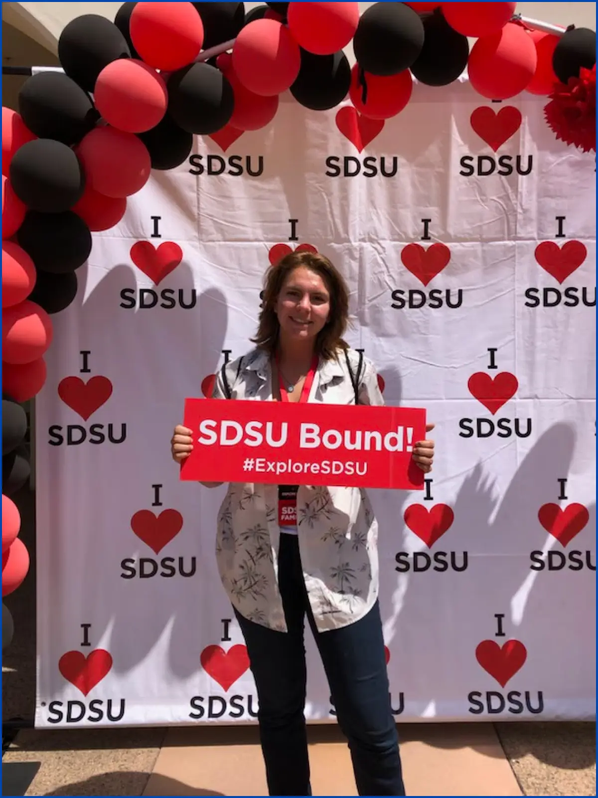
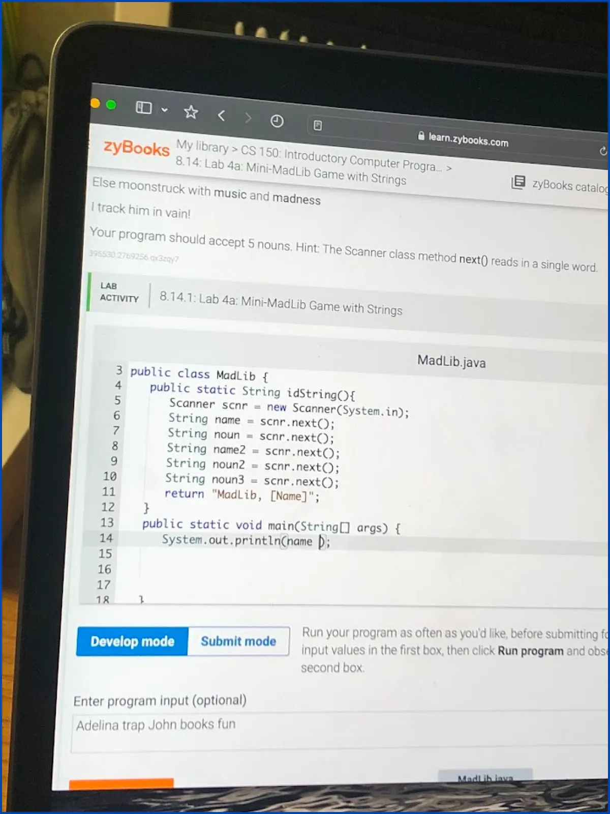
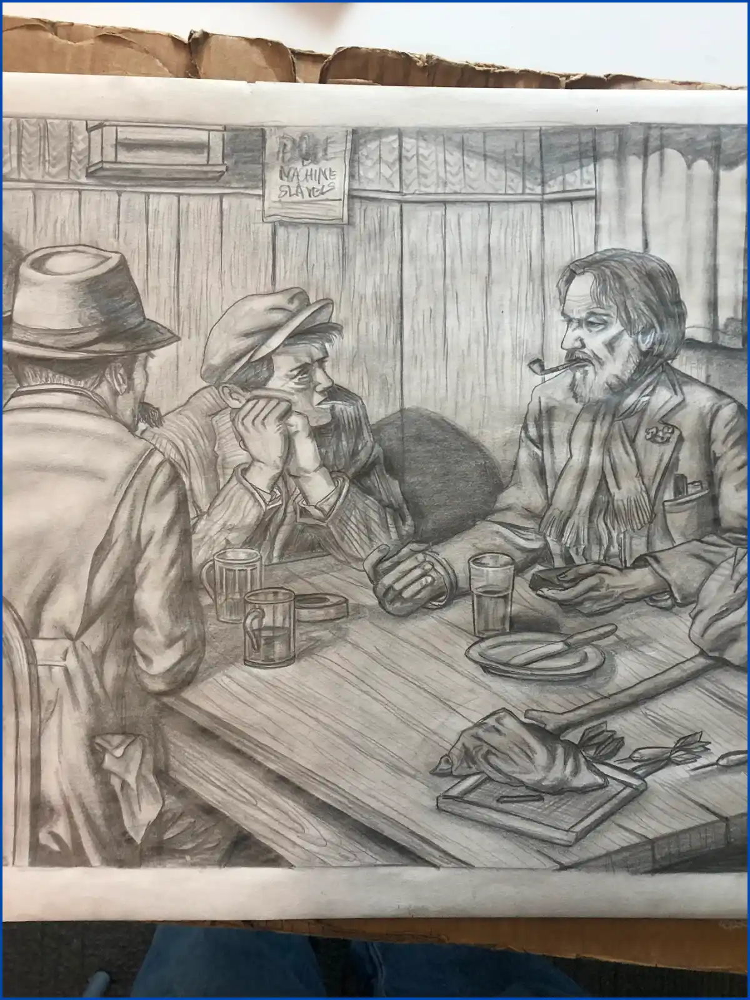
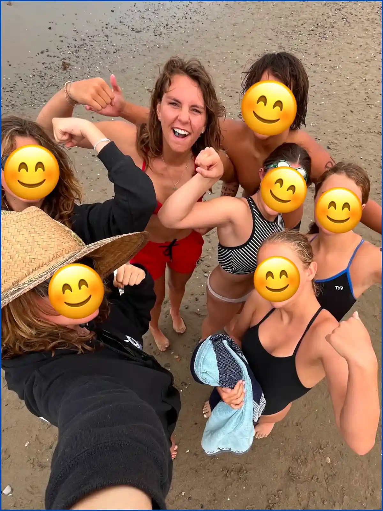
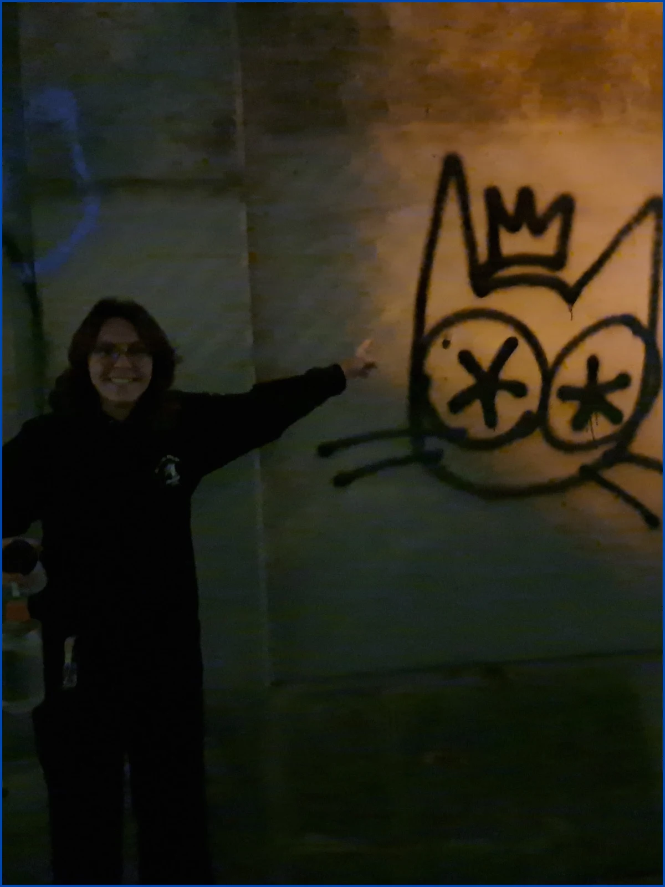
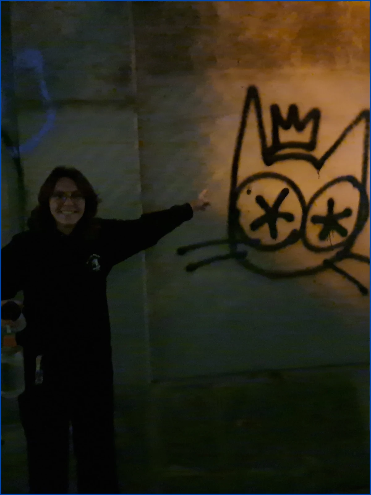

“I don’t know what I’m doing but I’m enrolled.”
During this year, I took on advanced computer science coursework in algorithms... Alongside academics, I applied these skills through hands-on projects and independent work, using real-world experiences to reinforce theory and expand my technical and creative range. Other cool stuff / achievements: got this job, won a hackathon, joined water polo team, etc.
- Intro to Computer Programming
- Intro to Honors / Seminar
- College Algebra (again)
- Rhetoric of Written Argument
- Psychology of Personality
- Intermediate Computer Programming
- Computer Organization
- Precalculus (again)
- Rhetoric of Written Arguments
- ART 100: Drawing I
- Oral Communication
- Introduction to Spanish
- Cinema as Art
- WORK: Junior Lifeguard Instructor
 
